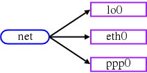
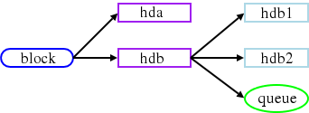

Nested classes

The class API has changed little since it was documented in this LWN driver porting article. Kernel code registers a class structure to create a directory in /sys/class, then populates it with class_device objects. This API has worked for some time, but it has its limitations; it forces a two-level class->device structure which is unable to represent all of the relevant data structures in the kernel. For many class hierarchies, such as the network device class tree shown in the diagram to the right, two levels is sufficient. Other subsystems, however, have had trouble with this limitation.

Consider, for example, the block subsystem, as represented by the simplified diagram to the left. The block subsystem deals in block devices, of course, and those are represented in the second layer of the diagram. Each block device, however, can contain partitions, which are (virtual) block devices in their own right. Putting all of those partitions in the top layer of the block class hierarchy would lose the relationship between those partitions and the physical devices where they live; the deeper hierarchy truly does make sense. There are also other objects, such as the request queue, which need to be present in the class tree. The fact that the class subsystem cannot represent this structure is one of the reasons why the block layer has its own sysfs subtree, under /sys/block, even though it logically belongs under /sys/class.This issue recently came to a head when Dmitry Torokhov reworked the input subsystem to make use of sysfs. The input class tree also fails to fit neatly into the class subsystem, though for slightly different reasons. The input layer can export multiple interfaces to the same device; a touch screen can show up as a serial device, as an event generator, or as a mouse, for example. Even a straightforward mouse can appear by itself, or as part of the multiplexed "mice" device.
As a way of representing the structure of the input subsystem, Dmitry implemented a "subclass" mechanism. Various objections to the implementation were raised, however, and Greg Kroah-Hartman went off to design a solution he liked better. His patch has now been posted for review; it is also part of the -mm tree.
Greg's solution does not involve subclasses at all; instead, the class_device structure has acquired a new parent field. The function which creates class_device structures has a new prototype:
struct class_device *class_device_create(struct class *cls,
struct class_device *parent,
dev_t devt,
struct device *device,
char *fmt, ...);
The parent argument is new. If it is non-NULL, the new class_device will be placed under the parent class_device in sysfs, rather than directly under the class itself. Needless to say, this change breaks all users of the class subsystem; if it goes into the mainline, all out-of-tree code using classes will have to be updated.
This interface should work reasonably well in the block case, where partitions can truly be thought of as child devices. Dmitry is less pleased with it for the input subsystem, however. He would like to be able to set up different hotplug handlers for lower-level entries, but, since those handlers are set up at the class level, an implementation without subclasses does not provide that capability. There are other objections as well; the parent mechanism makes it a little harder to set up the sort of hierarchy Dmitry would like to create, for example.
As of this writing, there has been no further discussion of the interface.
There is a distinct chance that it could change before it makes its way
into the mainline. In one way or another, however, support for a deeper
/sys/class is likely to be merged.
| Index entries for this article | |
|---|---|
| Kernel | Device model |
| Kernel | Sysfs |